試用 Fedora 16 作業系統與 GNOME 3 桌面環境

◎ 本文原載風吹草動，授權採用「創用 CC」姓名標示-依相同方式分享 3.0
Fedora 16 已於 2011 年 11 月 8 日發行！時值我期中考周。考完隔週一我就試圖把 Lenovo S205 上的 Fedora 15 試圖重新安裝為 Fedora 16。
困境重重
我想大概是之前沒有做紀錄吧，我安裝時竟然忘了 S205 的 UEFI 實作有問題，GRUB 會無效，必須把開機載入器安裝在自己的根分割區裡，再到 Windows 下用 easyBCD 製作多重開機選單才行。於是悲劇發生，安裝完後重開機，筆電進入 MBR 的開機載入器之前就又重開回到 BIOS 畫面，不斷重複。看到時就想到「慘了，MBR 被幹掉了！」，畢竟我沒有 Windows 7 安裝光碟，我有的只是 Lenovo 內建軟體製作出來的 3 片系統還原 DVD！
我覺得微軟和品牌電腦廠商只附給你作業系統和還原光碟製作軟體而已，這樣的作法相當不洽當。首先，我要製作還原 DVD 得先自己買外接光碟機，那就算了，我自己本來就會用到，我還得花時間（大約 50 分鐘）、花 DVD 的錢去製作 DVD。
重點是製作完系統還原 DVD 後，你就只能拿它來還原。回到你上次備份或是出廠設定值。比起上次備份還要更多張 DVD 與時間，我當然只做原廠的還原光碟。這片還原光碟甚至沒有修復功能，因此 MBR 被幹掉後你只能默哀，然後放入還原光碟讓一切規零。所以！我只能把整臺電腦分割都幹掉！一切從頭開始！我只要有 Win 7 光碟就能透過 bootrec.exe /fixmbr 就好了啊！
對於我會自己製作還原光碟的人來說，這樣已經很輕鬆了，不會的人、沒做還原光碟的人，或是沒有另一台電腦可以拯救的人，還要拿去維修據點修理，趁機讓廠商多個機會敲詐你。或許到場時，廠商會跟你說：不好意思，這不是天然的硬體損壞，是人為的軟體崩潰，不在保固範圍內喔～我們可以幫你重灌回原廠設定，但是裡面資料就沒有了，這樣可以嗎？
當然不可以！我買電腦附作業系統，竟然沒有附安裝光碟！那我買空機再自己買 OEM 版作業系統不是更好！但實際上你要買這台筆電，在臺灣就是沒賣空機的，你要請你找其他型號。就算真的被你弄到的，你安裝的 OEM 版也不會有 Lenovo 針對自家機器設計的獨家軟體與優化（最佳化）設計，像是 Energy Star 電源管理模式（這個東西很中用，可以改成在插入電源時只讓筆電充飽 45-50% 之間，避免電池維持高放電狀態，延長電池壽命）、加速開機等等。真希望 Linux 下的電源管理也可以改成只充飽 45-50%！
於是我重跑還原光碟，再開始裝軟體、用 Easeus Partition Master 免費家用版調整分割區，不過也剛好讓我有機會多分個分割區給 Chakra Linux，有空時可以玩玩。
一切就緒後，我已經花掉了一個晚上，只好隔天放學再處理 Fedora 16。當然這次我就沒這麼笨了，有改開機載入器的安裝位置。於是安裝完成！恭喜！
撥雲見日
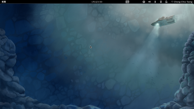▲ 圖1：Fedora 16 採用 GNOME 3.2，是 GNOME 3 釋出後的第二個穩定版本（第一個是 3.0）。
桌布描繪《潛海幾萬里》一書中的鸚鵡螺號與深海，乃是因為本版 Fedora 16 代號為 Verne，是潛海幾萬里的作者凡爾納。
Fedora 16 Live CD 下的正體中文預設是用 AR PL UMing，前一版是文泉驛正黑 WQY Zen Hei（其實原本應該是 UMing，但是 Live CD 空間不夠沒包進去），但我比較偏好文泉驛微米黑 WQY Micro Hei。但是根據 Release Note 發行備註提到中文預設換成微米黑了，我在想或許是 DVD 版吧。有空再確認看看。
我安裝完第一件事就是更新系統，用 sudo yum update 來跑，會比圖形界面的「軟體更新」反應快許多。
由於 GNOME 3 附帶的 GNOME Shell 預設界面相當現代，與 AR PL UMing 搭配起來相當不和諧，尤其是登入畫面與字搭起來超突兀的，所以第二件事情我就把系統預設字型改成微米黑了。不過微米黑的缺點就是小字會擠在一起，不過這是所有中文向量字型的通病，而且微米黑的質量已經很高，即使擠在一起也比起正黑、UKai 好看太多了。
這有很多作法，像是學 Ubuntu 的 language-selector 做一個 69-myname-zh-tw.conf 放在 /etc/fonts/conf.avail/ ，然後做個 sudo ln -s 檔名 目標目錄 (ex. sudo ln -s /etc/fonts/conf.avail/69-myname-zh-tw.conf /etc/fonts/conf.d/)即可。
我內容的寫法仿照 ubuntu 的 lanuguage-selector-zh-tw.conf，先排序通用字族的字型挑選清單，再利用綁定把特定西文字型強加在中文字型上。
如果不想針對整個系統，做個 .fonts.conf 放在家目錄下也可以。
不過奇怪的我測試 fc-match Cantarell 時竟然是抓到 WenQuanYi Micro Hei，這有點詭異。
再來就是把常用程式拉到 Dash，像是終端機、Empathy、螢幕擷圖，接著補裝我自己常用到的軟體，像是 Flash 與 RPM Fusion 套件庫、LibreOffice，以及我翻譯用、測試翻譯用的軟體，像是 poedit、qt-devel（因為 Fedora 沒拆包，所以要裝 Qt 翻譯工具 Linguist 就得全裝）等。RPM Fusion 的套件庫安裝方式很簡單，就只要前往 RPM Fusion 的網站，先點 Enable RPM Fusion on your system，再看到 Graphical Setup via Firefox web browser 標題，按下 RPM Fusion free for Fedora 14, 15 and 16 就大功告成。軟體安裝會問你密碼，打一打就好了。nonfree 套件庫也是同理，按下 RPM Fusion nonfree for Fedora 14, 15 and 16 就可以。
Flash 的話，就先去 Adobe 官網，找到下載，然後先選擇後面括號裡有 YUM 的，這會幫你裝 Adobe 的金鑰與套件庫，再來你可以再從同個網頁選取後面括號有 rpm 的安裝套件，或是 sudo yum install flash-plugin。
以上兩個動作閒麻煩的話，可以用 Fedora Utils 勾選後輕鬆安裝啟用。
辦公軟體
至於 LibreOffice，下個 sudo yum install libreoffice 即可，中文包會自動偵測並安裝，不必像 Fedora 15 特別處理。
GNOME 3 導覽
在 GNOME 3.2 中，已經把 GDM 的外觀重新打造，以符合 GNOME Shell 整體的觀感。
登入後，將滑鼠移至畫面左上角後 ，或是按下鍵盤的 Meta 鍵 (Windows 旗幟開始圖示)，GNOME Shell 會顯示「概覽」畫面。
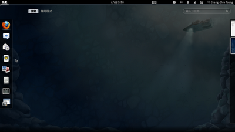▲ 圖2：GNOME Shell 概覽
畫面左方的「圖示行」讓你快速存取「喜愛」應用程式，以及「開啟」的應用程式。
視窗管理由原先的縮到最小、放到最大、關閉三按鈕，改成僅有關閉單一按鈕。
在標題列按下「滑鼠中央滾輪」可以將視窗推送到最下層，便能看見下方剛剛被擋住的視窗。
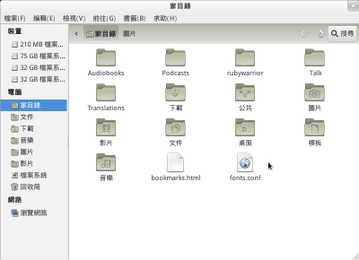▲ 圖3：視窗管理僅剩關閉一紐
此外，GNOME Shell 也導入了 Windows 的 Snap 快抓黏貼功能。將滑鼠點住標題列不放，拖曳至畫面最上方會讓視窗最大化，拖曳離開最上方則回復原始大小；拖曳至最右方讓讓視窗佔據畫面右部份；拖曳至最左方會讓視窗佔據畫面左部份。

▲ 圖4：快抓黏貼視窗管理
切換應用程式的方式，由原先的工作列點選改成「概覽」畫面「視窗」分頁內縮圖點選來處理。
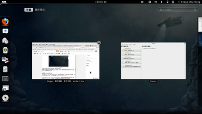▲ 圖5：多視窗管理
又或者可以透過 Alt + Tab 鍵在程式之間切換，若一個程式有多個視窗，圖示下方會出現箭頭，當你將滑鼠移動過去時，會顯示出多個視窗的縮圖，讓你從中選擇。

▲ 圖6：Alt+Tab 切換應用程式視窗
若你開啟了兩個以上應用程式，GNOME Shell 會將它們以縮圖的方式排列在「視窗」分頁之中。下方擷圖可見我開啟了 Firefox 與 Brasero，見到圖示直行中的「火狐」與「光碟燒錄」圖示下方有打光，以及視窗分頁中有兩個縮圖。
畫面右方縮起來的方塊是全新設計的工作管理，你可以不斷將應用程式從「視窗」分頁中拖曳至右方的下個工作區內，或者是從前面的工作區中拖曳應用程式至下個工作區內，依此管理目前的工作。
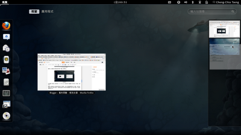▲ 圖7：Alt+Tab 切換應用程式視窗新增工作區
插入可移除式裝置時，GNOME Shell 會彈出通知在下方，讓你決定是否要透過預設應用程式開啟。如果你不管這個通知的話，它會一直顯示在下方，直到你點通知中的空白區域後才會隱藏。
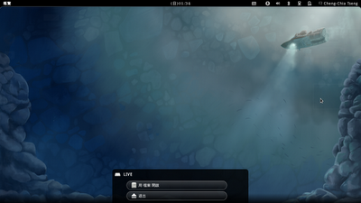▲ 圖8：可移除式裝置通知
隱藏在哪裡呢？將滑鼠移動至畫面右下角，GNOME Shell 會顯示出最下方的「通知列」，通知就隱藏在那裡。點選後，會出現可移除式裝置與卸除按鈕，你可以輕鬆透過此按鈕來卸除這些裝置。
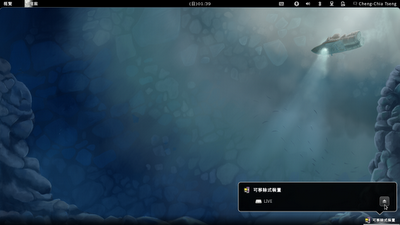▲ 圖9：快速卸除可移除式裝置
右上角的選項顯示為使用者名稱，是所謂的「使用者選單」，前方圖示用來表示使用者是否要開啟 Empathey 即時通訊程式的整合功能。按下你的名稱後，會出現個選單。其中的「有空」與「沒空」就是表示是否要連上即時通。當你忙碌時，就來到這個選單改成「沒空」吧！
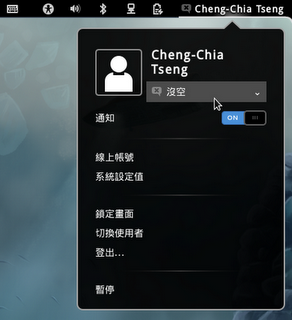▲ 圖10：Empathy 即時通訊程式整合
在使用者選單中，最下方預設只顯示「暫停」，是暫停電腦的意思，這對於筆記型電腦來說滿方便的，可以讓你快速回復原始狀態。
但如果想關機怎麼辦？只要按住 Alt 按鍵 (Alt 是 Alternate 的簡寫，意思是其他替代方案)，「暫停」會變成「關閉電源」。
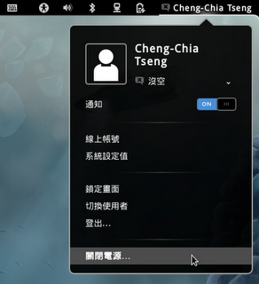▲ 圖11：按下 Alt 將「按停」改為「關閉電源」
此時利用滑鼠點選「關閉電源」，可以看見關機選單，你可以「取消」、「重新開機」、「關閉電源」。
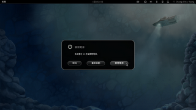▲ 圖12
但這對於桌電來說過於麻煩，一般我們都會直接關閉電源，因此可以安裝一個 GNOME Shell 擴充套件「gnome-shell-extension-alternative-status-menu」，sudo yum install gnome-shell-extension-alternative-status-menu 即可，透過 gnome-tweak-tool (下一段會講到) 開啟這個擴充套件後，你看到的選單最下方就不是「暫停」，而是「關閉電源」了。
其他 GNOME 3 介紹可以前往 https://www.gnome.org/gnome-3/ 觀看，像是即時通訊整合、更方便的系統設定值設計等。
自訂 GNOME 3
再來因為 GNOME 3 幾乎失去自訂的能力，無法改變佈景主題，以及許多設計不被喜歡，因此出現了各種 GNOME Shell 擴充套件，以及 gnome-tweak-tool。
你可以利用 sudo yum search shell extension 來看看有哪些擴充套件你想安裝的，再利用 gnome-tweak-tool 啟用它，並且調整其他你不喜歡或不習慣的界面設計。
你也可以透過 GNOME 剛開放的擴充套件專門網站，直接前往安裝你喜歡的擴充套件，它像是 Firefox 與擴充套件網站一樣，可以輕鬆安裝。
前往「應用程式」>「附屬應用程式」>「進階設定值」可啟動 gnome-tweak-tool。
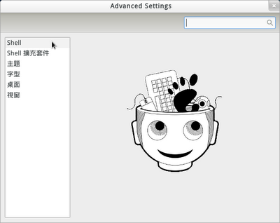▲ 圖13：gnome-tweak-tool
ibus 現在正測試與 GNOME Shell 的整合，可以使用 gnome-tweak-tool 將它啟動。
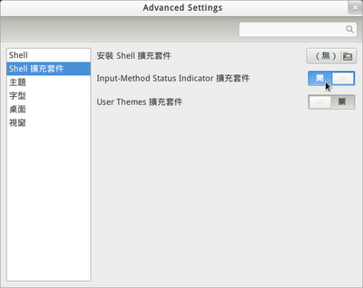▲ 圖14：啟用 Input-Method Status Indicator
啟動後重新登入，就可以看到美觀的 GNOME Shell 輸入法整合。
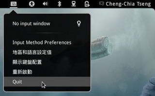▲ 圖15：輸入法狀態左鍵選單
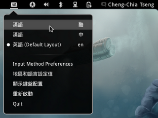▲ 圖16：游標出現可打字時輸入法狀態選單
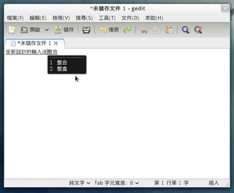▲ 圖17：符合 GNOME Shell 觀感的候選字詞選單
最新版 ibus-chewing
若想測試最新的 ibus 與 ibus-chewing，可以 sudo yum install --enablerepo=updates-testing ibus ibus-gnome3 ibus-chewing 來安裝。
Fedora 裝機小工具
最後，有兩項 Fedora 小工具可以用，只要隨便勾一勾，你就可以輕鬆完成各種裝機後常做的動作，一個叫做「Fedora Utils」，一個叫做「easylife」，有興趣的人可以查詢一下，並且動手試試。
自由軟體鑄造場電子報 : 第 187 期 PaaS：程式語言開發在雲端「Programming in Paas」（上）
標籤: Fedora 16, GNOME 3, 作業系統, 安裝,
分類: 源碼專案